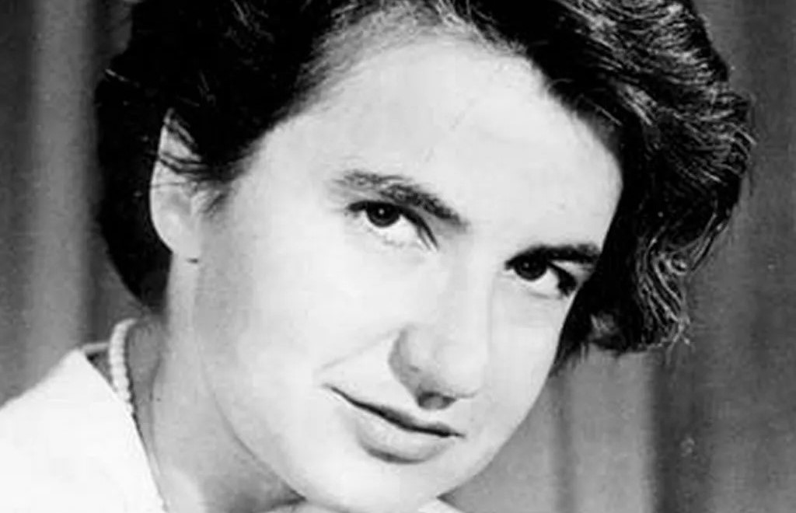
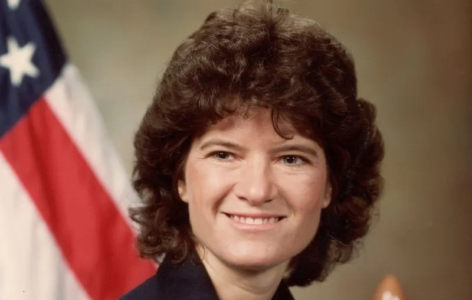

Women's Achievements
Why Recognize?
Recognizing Women's achievements in history is important to achieving a better world. We need to acknowledge the importance of Women and their contributions. Important contribtutions of women include areas in science, politics, arts, society and more. Here are three woman's achievements.
Marie Curie (1867-1934)
Marie Curie was a Nobel Prize winner. She was a Polish scientist who led to the discovery of two elements, polonium and radium. Her discoveries were accompanied by the use of radiation in medicine. She was the first women to win a nobel prize!

Rosalind Franklin (1920-1958)
Rosalind Franklin is responsible for much of what we know today of DNA. She discovered DNA's density and its molecular structure. This allowed James Watson and Francis Crick to discover that DNA is shaped as a double helix. It changed how scientists viewed genetics and the passing of genes.
Sally Ride (1951-2012)
Sally Ride was the first woman American astronaut to travel in space. She was on the Challenger in 1983. She was an astrophysicist who got her spot by beating over 1,000 other applicants in the NASA space program. She was also the youngest American in space.
